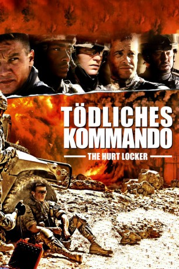

#20 Tödliches Kommando - The Hurt Locker
Alternativ: The Hurt Locker
Auszeichnungen: 6 Oscars gewonnen für 3 Oscars nominiert 5 BAFTA-Awards gewonnen
 
 IMDB-Wertung: 7.6 / 10
IMDB-Wertung: 7.6 / 10  Metascore: 94
Metascore: 94 
Als wäre der Job der Bombenexperten im Irak nicht schon gefährlich genug, müssen Sanborn und Eldridge, beides Soldaten einer kleinen Elite-Einheit, feststellen, dass ihr neuer Sergeant lebensgefährliche Alleingänge unternimmt und den Tod herauszufordern scheint. Wenn sie den Krieg überleben wollen, müssen sie ihn schnellstmöglich unter Kontrolle bringen.
Jahr: 2008
Dauer: 131 Minuten
FSK: 16
Land: USA Studio: Summit EntertainmentTonspuren:
Untertitel:
Auflösung: 720p (1280×720) Größe: 5570 MB
Genre: Drama, Thriller, Krieg
Regisseur:  Kathryn Bigelow
Kathryn Bigelow
Drehbuch: Mark Boal
Soundtrack: Marco Beltrami, Buck Sanders
Darsteller:
 Jeremy Renner als Staff Sergeant William James
Jeremy Renner als Staff Sergeant William James Anthony Mackie als Sergeant JT Sanborn
Anthony Mackie als Sergeant JT Sanborn Brian Geraghty als Specialist Owen Eldridge
Brian Geraghty als Specialist Owen Eldridge Guy Pearce als Sergeant Matt Thompson
Guy Pearce als Sergeant Matt Thompson Ralph Fiennes als Contractor Team Leader
Ralph Fiennes als Contractor Team Leader David Morse als Colonel Reed
David Morse als Colonel Reed Evangeline Lilly als Connie James
Evangeline Lilly als Connie James Christian Camargo als Colonel John Cambridge
Christian Camargo als Colonel John Cambridge Sam Spruell als Contractor Charlie
Sam Spruell als Contractor Charlie Sam Redford als Contractor Jimmy
Sam Redford als Contractor Jimmy Malcolm Barrett als Sergeant Foster
Malcolm Barrett als Sergeant Foster Kristoffer Ryan Winters als Soldier at Intersection
Kristoffer Ryan Winters als Soldier at Intersection- J.J. Kandel als Guard at Camp Liberty Market
- Ryan Tramont als Guard at Liberty Gate
- Michael Desante als Iraqi Translator
- Jerry Fortuna als Soldier , uncredited
- Kate Mines als Soldier , uncredited
- Suhail Aldabbach als Black Suit Man
- Christopher Sayegh als Beckham
- Nabil Koni als Professor Nabil
- Feisal Sadoun als Contractor Feisal
- Barrie Rice als Contractor Chris
- Imad Dadudi als Iraqi Police Captain at UN
- Erin Gann als Mortuary Affairs Officer
- Justin Campbell als Sergeant Carter
- Hasan Darwish als DVD Merchant
- Wasfi Amour als Insurgent in the Stairwell
- Nibras Qassem als Nabil's Wife
- Ben Thomas als US Army Medic
- Nader Tarawneh als Insurgent Sniper
- Anas Wellman als Soldier at UN
- Omar Mario als Butcher
- Fleming Campbell als Soldier at Airfield
- Jeffrey Feingold als Soldier , uncredited
- David Gueriera als First Sergeant , uncredited
- Joseph Martinus als Soldier , uncredited
- Yousef Shweihat als Insurgent Sniper , uncredited
Datei: X:\2008(N-Z)\Tödliches Kommando - The Hurt Locker (2008, FSK16, 1280x720).mkv seit 15.01.2015
Festplatte: HD 2008(G-Z)-2009(A-F)
 Es gibt insgesamt 91 Filme in der Gruppe '2008(N-Z)'
Es gibt insgesamt 91 Filme in der Gruppe '2008(N-Z)'